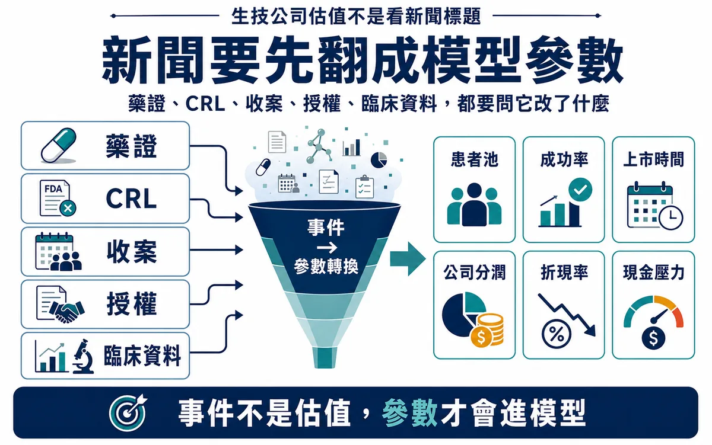
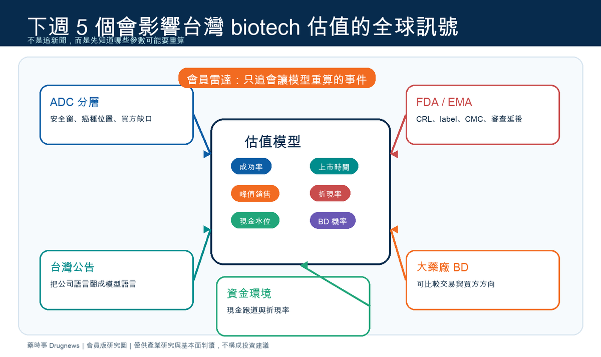
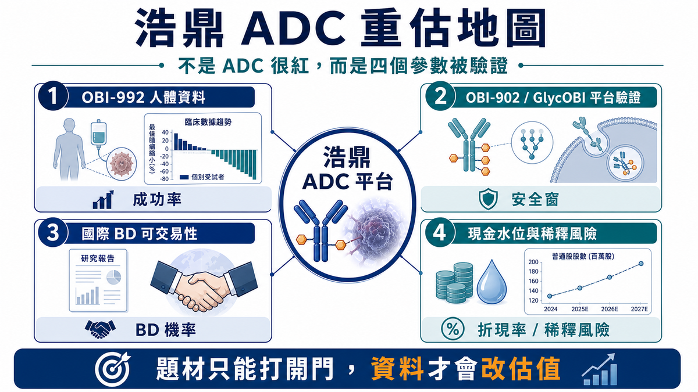

內容系列
深度商業分析
深度分析文章，聚焦 BD、授權、產業策略、平台價值與資本市場重新定價。
24 篇文章
全部文章

生技公司估值不是看新聞標題：6 個會改變模型的參數
新聞只告訴你發生了什麼；估值要問的是，事件究竟改變成功率、上市時間、患者池、峰值銷售、權利經濟，還是現金與稀釋風險。

下週雷達｜5 個可能重算台灣 biotech 估值的全球訊號：ADC、監管、公告、BD 與資金折現率
這篇不是新聞清單，而是會員版下週雷達：把 ADC、FDA／EMA、台灣公司公告、大藥廠 BD 與資金環境五個訊號，翻成會改變成功率、上市時間、峰值銷售、折現率、現金水位與 BD 機率的估值參數。

【事件型估值快評】浩鼎 ADC 重估：市場買的是 TROP2 題材，還是 GlycOBI 平台選擇權？
浩鼎 ADC 重估不能只看 TROP2 題材。這篇用 OBI-992、OBI-902、GlycOBI、BD 選擇權與 SOTP，重算合理市值與上修／下修條件。

【深度商業分析系列】BD 最高金額不是成交價：真正要拆的是誰承擔了風險
BD 交易不能只看最高總金額。真正要拆的是 upfront、近端付款、遠期 milestone、royalty / profit share，以及買方到底接走了哪一段風險。

大藥廠的客氣話，真的別太當真
很多 台灣的生技公司 做完一場 大藥廠 一對一會議後，最容易陷入一種甜蜜誤會。 會議氣氛很好。 對方科學家頻頻點頭。 BD 問題很精準。 最後還留下一句：「Interesting, let’s discuss internally.」 然後團隊回到公司，大家開始覺得事情好像有戲。有人說對方

管線估值：為還沒上市的未來定價，BD 最難也最值錢的一課
一個新藥，從實驗室走到臨床，再從臨床走到上市，燒錢速度常常快得嚇人。 但如果成功，回報也可能大到改變一家公司的命運。 這就是生技製藥產業最迷人的地方，也是最殘酷的地方：在產品真正賣錢以前，市場就必須先替它定價。問題是，這些資產很多時候還沒有營收，甚至還沒有大規模臨床資料，卻已經要進行授權、併購、

Pipeline 估值雷達 001｜FDA CRL 不是價值歸零，而是估值參數重排
FDA CRL 不該只看成藥證失敗，而是要拆成產品、臨床、CMC、label 與補件完整性，重算成功率、上市時間、峰值銷售與稀釋風險。

BD 解剖室 001｜BMS x 恆瑞：15.2B 美元交易不是「中國創新藥很強」這麼簡單，而是大藥廠正在買一套早期開發
BMS x 恆瑞最高 15.2B 美元合作不能只看 headline value；真正要拆的是 upfront、周年付款、milestone、royalty 與資料包能否讓國際買方承擔下一段風險。

無針注射不是噱頭：從怕打針，到下一代藥物遞送平台
很多人對打針都有陰影。 輕一點的是緊張、皺眉、轉頭不看；嚴重一點的，甚至會暈針、冒冷汗、心跳加快。但很現實的是，人這一生幾乎很難完全逃過注射：疫苗、胰島素、局部麻醉、皮下注射藥物、醫美療程，或某些慢性病長期給藥，都可能需要針頭。 所以，無針注射這個技術乍聽之下很像噱頭。 但它並不是「隔空打針」

創新藥的品味：真正的 BD，不只是把藥賣出去，而是看懂病人、疾病與全球市場
AI 時代留給人類的東西，可能只剩下三件事：品味、勇氣，還有價值觀。 更精準地說，價值觀其實也包含在品味裡。 因為品味不是美感而已。品味是一個人如何選擇問題、如何判斷價值、如何決定把有限資源下注在哪裡。勇氣則是當你看見一個尚未被共識承認的方向時，仍然願意承擔失敗風險，往前走。 在投資如此，在創

BD 找標的，不是看故事，而是先算帳：如何量化一條管線到底值不值得買？
每一次 BD 決策，本質上都不是「多買一條管線」這麼簡單。 它其實是在決定公司未來幾年的資金流向、研發資源分配、利潤結構，甚至是整條估值曲線。 很多公司做 BD 時，嘴上說的是「補強產品線」、「布局新技術」、「增加策略協同」，但真正進到內部審查時，常常發現問題很大：資產看起來很漂亮，但買不起；科

第一三共最貴的一課：ADC 熱潮裡，產能也可能變成風險資產
在 ADC 賽道一路高歌猛進的 Daiichi Sankyo，正在為過去幾年的激進擴產付出代價。 這件事很值得台灣生技產業仔細看。 因為它表面上是一家日本大型藥廠的財務調整，實際上卻是一堂非常昂貴的產業課：新藥公司不能只看需求峰值，也要管理臨床失敗、法規延遲、產能閒置與 CMO 合約反噬的風險。

BD 怎麼跟 Big Pharma 1v1 開會？不是混臉熟，而是讓買方願意往下一步走
這幾年，新藥產業的 BD 交流會，已經變成各大 biotech 和 pharma 的標準行程。 海外的 JPM Healthcare Conference、BIO International Convention、BIO-Europe、LSX World Congress，到亞洲的 BioJapa

AI 製藥大單背後：百億美元交易案，不代表 AI 公司真的拿到百億美元
AI 製藥最近成為全球醫藥產業最容易被放大的敘事之一。 只要看新聞標題，很容易以為這個賽道已經進入「印鈔機模式」：一筆合作動不動 10 億美元、20 億美元、50 億美元，甚至上看百億美元。大型藥廠一邊喊專利懸崖，一邊大手筆擁抱 artificial intelligence、foundation

三抗不是炒冷飯：成熟標靶背後，其實藏著三層商業邏輯
雙抗火完，現在輪到三抗。 過去幾年，抗體工程的故事一波接一波。單抗之後是雙抗，雙抗之後是 ADC，ADC 之後又有人喊出三特異性抗體（trispecific antibody）的新時代。乍看之下，這很像醫藥圈又開始炒冷飯：同樣一批標靶，被換個分子格式重新包裝，再拿到資本市場講一遍新故事。 但如果

BD 必看：License-out 資訊揭露節奏，不是越透明越好，而是要讓買方一步一步「付出代價」
做 BD，最常遇到的不是對方沒興趣，而是對方一上來就很有興趣。 問題也出在這裡。 手上好不容易有一條潛力管線，終於等到 Big Pharma 或資金雄厚的買方回信，對方開口第一句常常就是：「可以先把完整資料包發來看看嗎？」 這時候，賣方通常會陷入一種很難受的拉扯。 給太多，怕被白嫖。 尤其

那個喊了 40 年的「創新藥回報率已死」鬼故事，唬住了多少人？
每隔幾年，製藥業就會流行一次「創新藥研發已經不賺錢」的說法。 這個說法通常會搭配一張很嚇人的圖：創新藥研發的內部報酬率一路下滑，從過去的雙位數，跌到只剩個位數，甚至一度跌到接近零。Deloitte 在 2025 年發布的《Measuring the return from pharmaceutic

Lilly 今年最貴併購案：為什麼一個「清醒開關」值 78 億美元？
Lilly 今年的併購節奏，已經不是「補管線」這麼簡單。 短短幾個月，從發炎、體內 CAR-T、ADC、AI 製藥到睡眠障礙，Lilly 幾乎把未來十年幾個最有想像力的技術方向都掃了一輪。 但如果把這幾筆交易攤開來看，最貴的一張支票其實不是給體內 CAR-T，也不是給 ADC，而是給一家做睡眠與

做藥，正在從拆盲盒變成搭樂高
樂高公司在 1932 年成立時，只是丹麥一家木匠創辦的木製玩具小工坊。 真正改變世界的，是 1958 年那塊帶有鉚釘與管狀結構的互鎖塑膠積木。 那個設計最迷人的地方，不是單一積木本身有多複雜，而是它把複雜世界拆成一個個標準化、可相容、可重複使用的基礎單元。只要規格對了，不同積木就能拼出房子、車子

慢病新貴 HDAC6：一個從腫瘤配角走向長期治療平台的表觀遺傳標靶
在創新藥研發裡，真正值得關注的標靶，往往不是一開始就站在聚光燈中央的那種。 有些標靶，是慢慢從配角變成主角。 HDAC6（Histone Deacetylase 6） 就是這樣一個標靶。 過去，HDAC 相關藥物最常被放在腫瘤語境裡討論。從早期 pan-HDAC inhibitor 到後來更選

深度解析：AI 製藥公司的估值體系
rNPV 之外，必須開始估一台「藥物生成機器」 AI 製藥公司最難被估值的地方，不在於模型有多炫，也不在於簡報裡寫了多少個 foundation model。 真正困難的是：傳統創新藥估值方法，往往只會估「已經看得見的管線」，卻很難估「持續生成管線的能力」。 這就是今天 AI drug dis

生醫藥人，如何在 SOP 與 AI 夾擊下，重新找回創造力？
有時候真的會覺得，做生物醫藥這一行，很容易精神分裂。 一方面，公司會議裡永遠都在喊創新。 老闆說，管線不能再跟著別人後面卷。 策略會說，我們要做 differentiated asset。投資人說，市場不想再聽 me-too 故事。BD 團隊說，現在 MNC 只買有非共識價值的資產。 但另一

大藥廠怎麼衡量早期專案？真正的關鍵，不是人脈，而是確信度
很多 Biotech 跟跨國大藥廠打交道時，常常會覺得對方的態度像「薛丁格的貓」。 一開始好像很有興趣，會議也開了，問題也問了，CDA 也簽了；但過一陣子又突然變冷，甚至直接沒有下文。於是很多人會把原因歸結為人脈不夠、時機不好、對方內部政治複雜，或 BD 談判技巧還不夠成熟。 這些因素當然存在。

創新藥 License-out：名為授權許可，實為 IP 賣身？
在創新藥產業裡，License-out 幾乎是近幾年最火的關鍵字。 從 ADC、雙抗，到各種小分子、自體免疫、代謝與 CNS 管線，亞洲與全球 Biotech 靠一筆又一筆授權大單，在資本寒冬裡硬是殺出一條路。對很多早期公司來說，License-out 不只是交易事件，而是續命工具、估值錨點，甚至